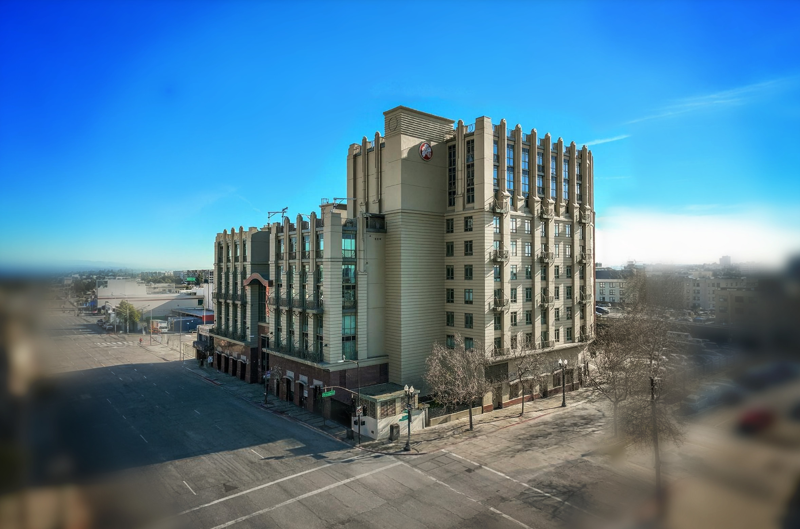
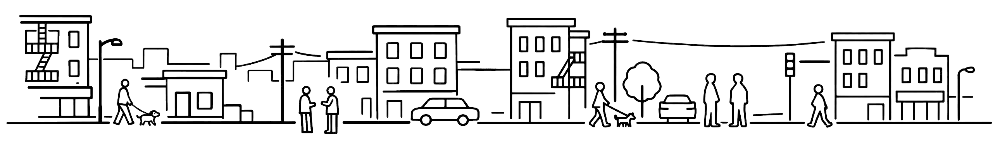

Welcome Home

Eight Orchids is a residential community located in downtown Oakland, at the intersection of Old Oakland, Chinatown, and Jack London Square. The building combines elegant architecture with modern living in one of the city’s most established neighborhoods.
With BART just steps away, residents have easy access to Oakland’s arts and dining scene as well as convenient transit to San Francisco and the greater Bay Area. Eight Orchids is designed for people who value location, character, and day-to-day practicality.
Amenities
Three-level indoor garage
Spacious two-level community room
1st floor rooftop courtyard
6th floor rooftop balcony
5 minute walk from 12th Street Oakland BART station
Walking distance to Old Oakland, Chinatown, and Jack London Square
Pet friendly
423 7th Street
Oakland, CA 94607
Oakland, CA 94607